Dashboard SmartPC 0.8.6
Catture native EGLFS Apple Calm 1.6.0, giorno e notte, con fixture isolate. Dati dimostrativi: non sono letture live né una prova ottica del pannello.
Formula 1
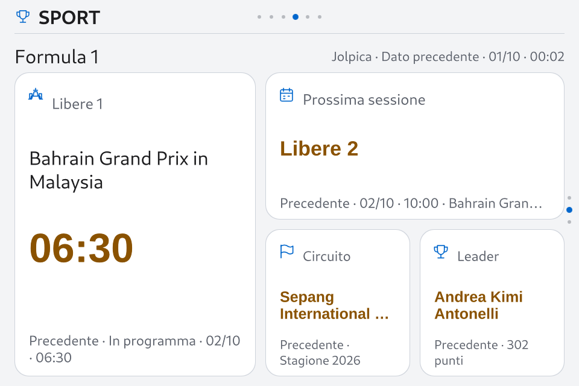
day · 960×640 EGLFS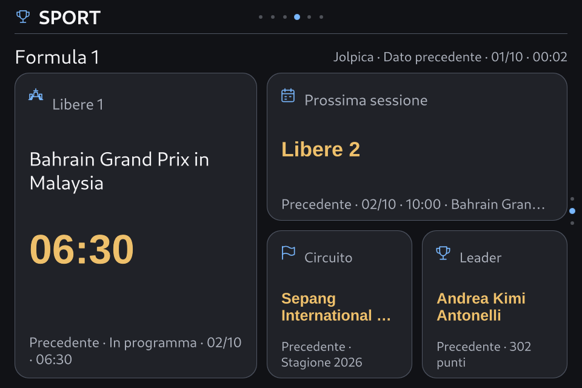
night · 960×640 EGLFSTraffico WAN
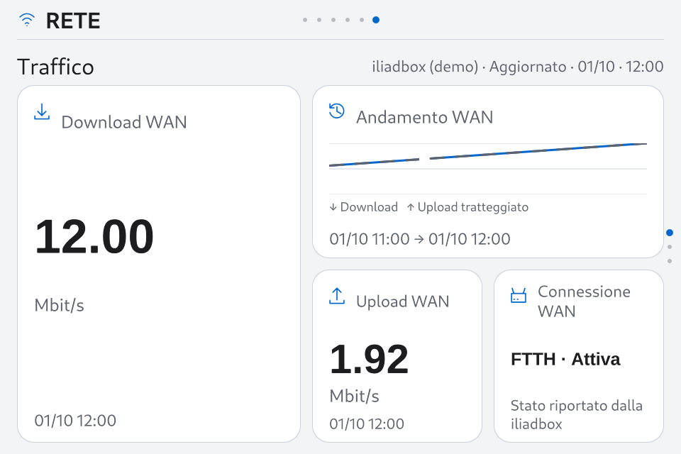
day · 960×640 EGLFS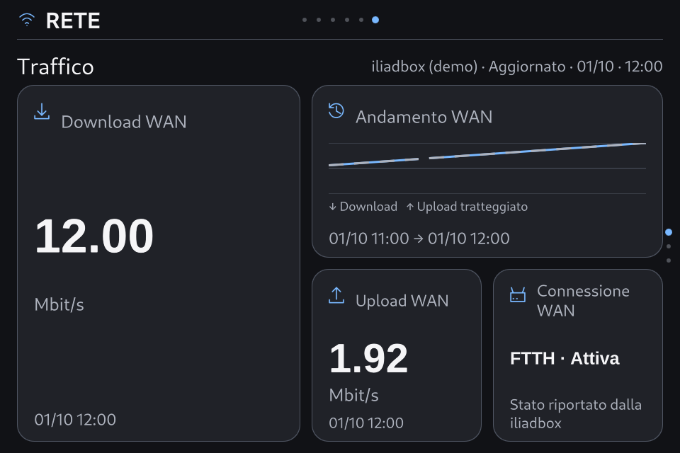
night · 960×640 EGLFSiliadbox
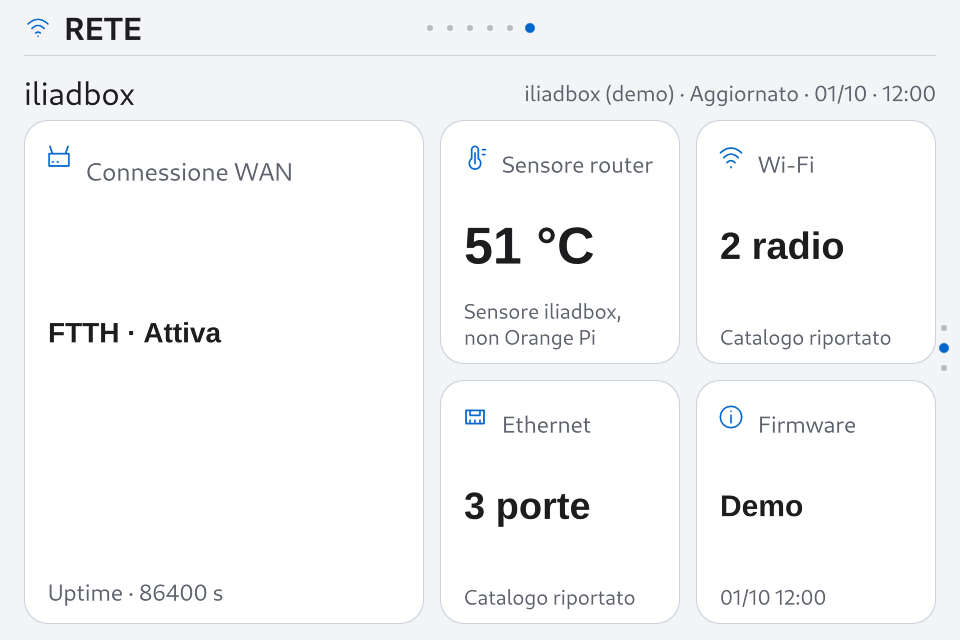
day · 960×640 EGLFS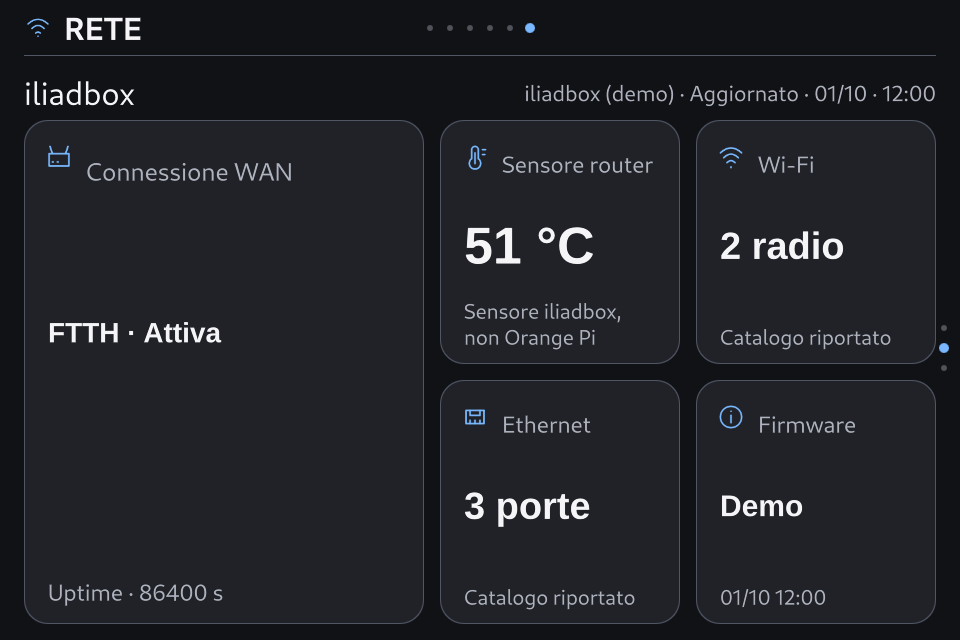
night · 960×640 EGLFSCasa — preferiti
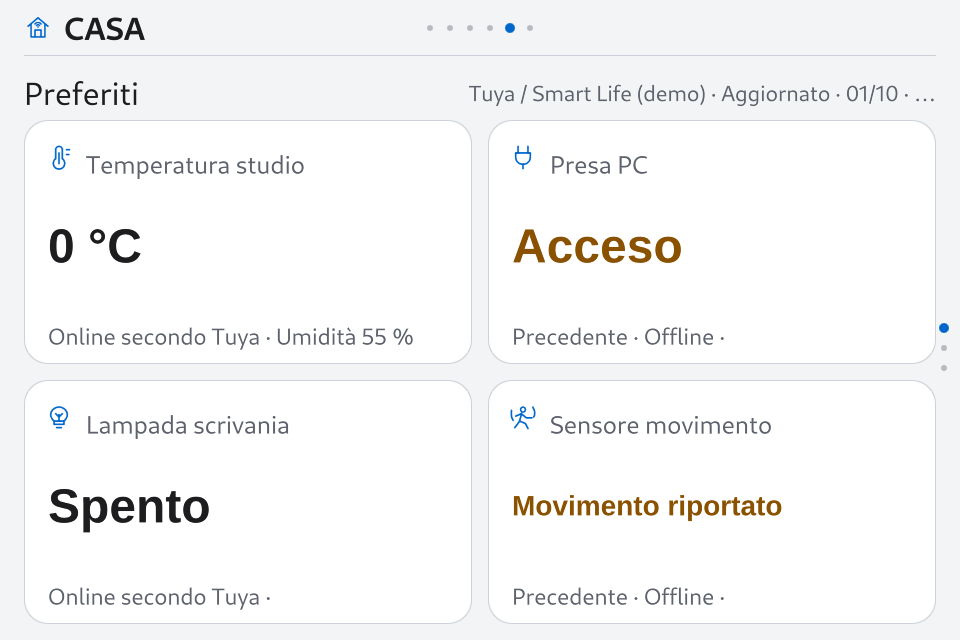
day · 960×640 EGLFS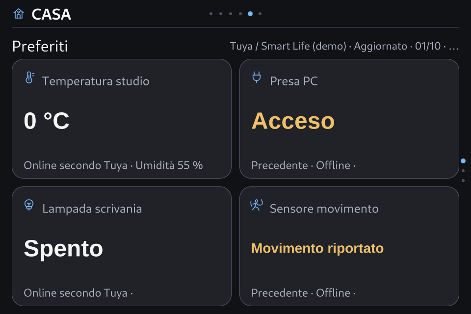
night · 960×640 EGLFSMeteo
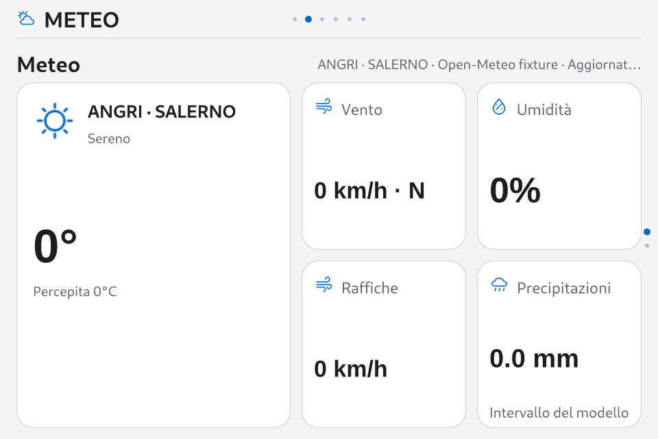
day · 960×640 EGLFS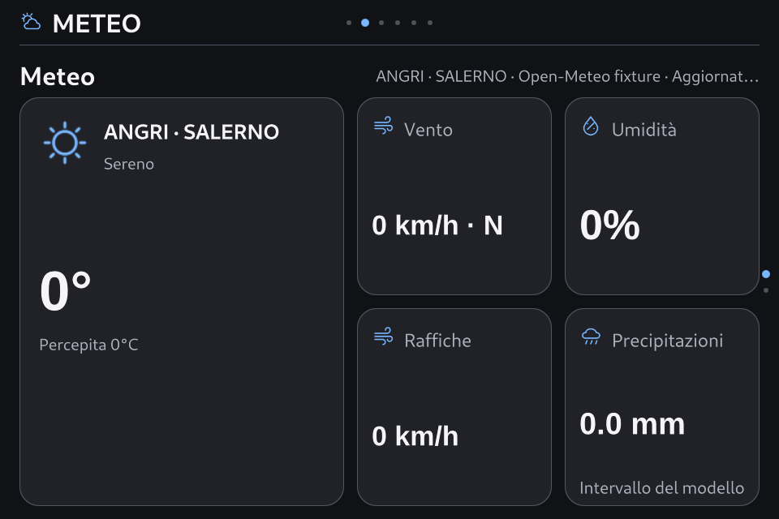
night · 960×640 EGLFSAccount
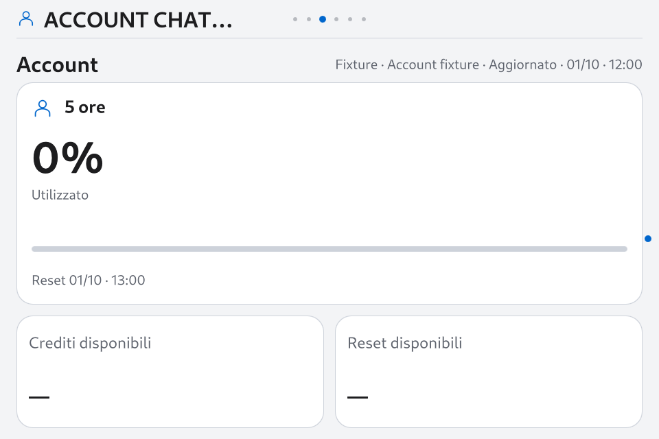
day · 960×640 EGLFS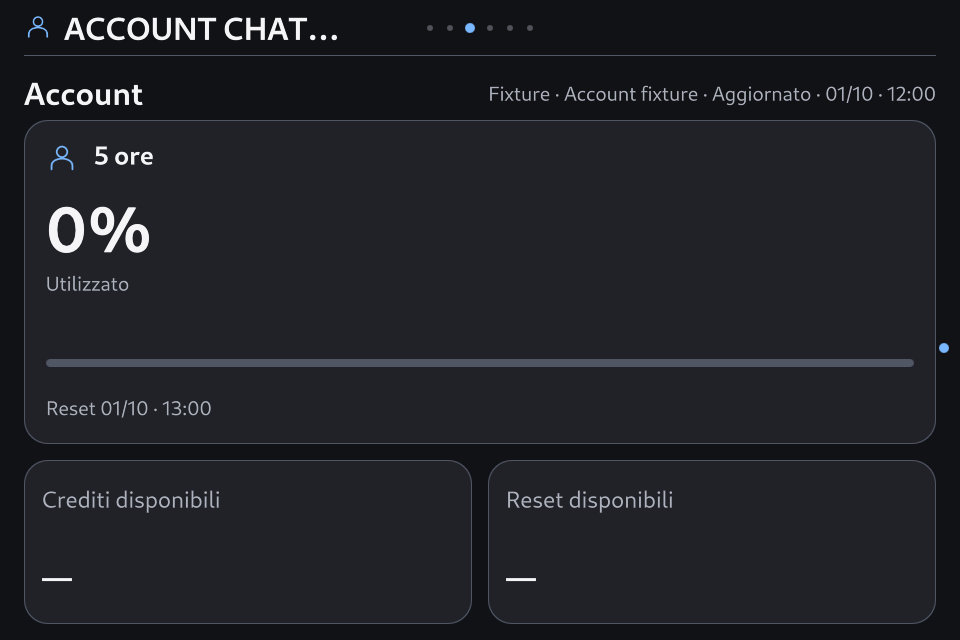
night · 960×640 EGLFS